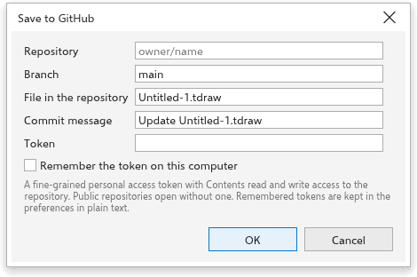
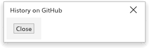

Conserver des dessins sur GitHub
TraceDraw peut ouvrir des dessins depuis un dépôt GitHub et les y enregistrer sous forme de commits, sur le bureau comme dans le navigateur. Chaque enregistrement devient une version dans l'historique du dépôt, que vous pouvez rouvrir plus tard. Les commandes se trouvent dans Fichier > GitHub.
Avant de commencer : le jeton
Les dépôts publics s'ouvrent sans jeton. Pour ouvrir des dépôts privés et pour enregistrer, créez sur GitHub un jeton d'accès personnel à granularité fine, avec un accès en lecture et en écriture au contenu du dépôt, et collez-le dans le champ Jeton.
Le jeton est conservé tant que TraceDraw fonctionne. Cochez Mémoriser le jeton sur cet ordinateur pour le garder pour la fois suivante ; il est alors stocké en clair dans vos préférences (dans le navigateur, dans le stockage de ce navigateur). Les boîtes de dialogue retiennent aussi le dernier dépôt, la dernière branche et le dernier chemin.
Ouvrir un dessin depuis GitHub
- Choisissez Fichier > GitHub > Ouvrir depuis GitHub.
- Tapez le Dépôt sous la forme
propriétaire/nomou son adresse github.com. - Tapez la Branche, ou laissez-la vide pour
main. - Tapez le chemin du Fichier dans le dépôt, par exemple
art/logo.tdraw. - Cliquez sur OK.
Le dessin s'ouvre dans un nouvel onglet, qui porte le nom du fichier. Il retient sa provenance et sa version.

Enregistrer un dessin sur GitHub
Pour un dessin ouvert depuis GitHub, Enregistrer (Ctrl+S) l'y enregistre de nouveau. Pour n'importe quel dessin, choisissez Fichier > GitHub > Enregistrer sur GitHub.
- Vérifiez le dépôt, la branche et le chemin.
- Écrivez un Message du commit qui dit ce qui a changé (il commence par "Update" suivi du nom du fichier).
- Cliquez sur OK.
Le dessin est enregistré sous forme de fichier .tdraw, avec ses polices, dans un nouveau commit sur cette branche. Enregistrer sous enregistre toujours un fichier sur votre ordinateur.

Quand GitHub refuse un enregistrement
Si le fichier a changé sur GitHub depuis que vous l'avez ouvert, ou si un fichier existe déjà à ce chemin et que votre dessin n'en provient pas, GitHub refuse l'enregistrement et la boîte de dialogue l'indique. Enregistrez sous un autre chemin ou une autre branche, ou ouvrez d'abord la version la plus récente. La boîte de dialogue explique aussi d'autres problèmes : un jeton refusé ou sans accès, trop de requêtes, un dépôt, une branche ou un fichier qui n'existe pas, un chemin qui est un dossier, un fichier qui n'est pas un dessin, ou un dessin de plus de 100 Mo.
Ouvrir une version antérieure
Pour un dessin ouvert depuis GitHub, choisissez Fichier > GitHub > Historique. La boîte liste les commits qui ont modifié le fichier, du plus récent au plus ancien, avec leur identifiant court, leur date, leur auteur et leur message. Sélectionnez-en un et cliquez sur Ouvrir : cette version s'ouvre comme un nouveau dessin, nommé d'après le fichier et le commit, qui n'est pas lié à GitHub.
